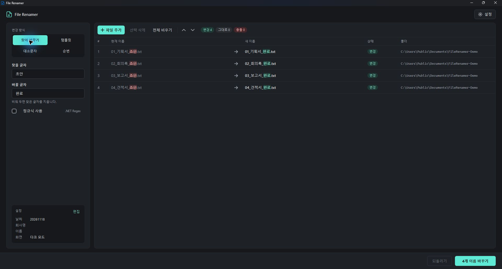
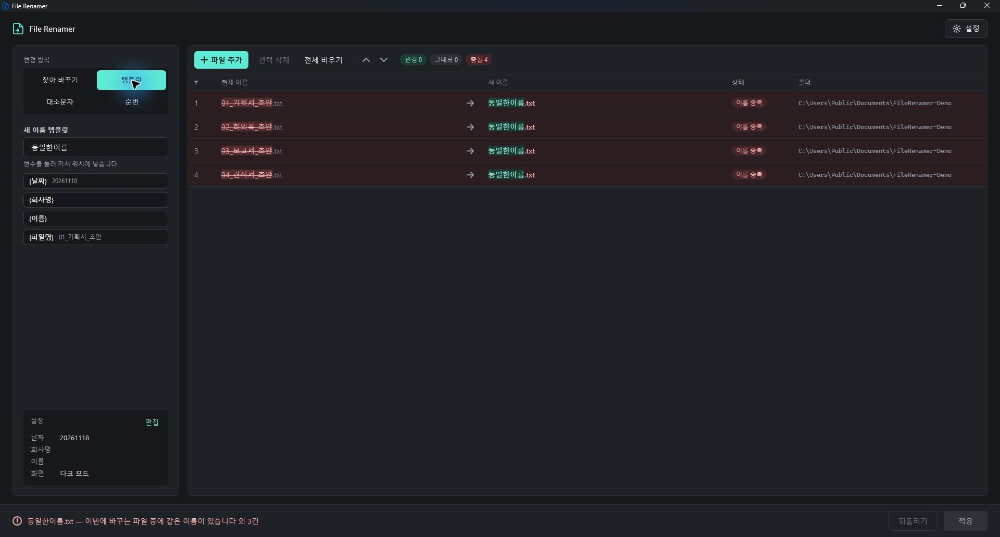
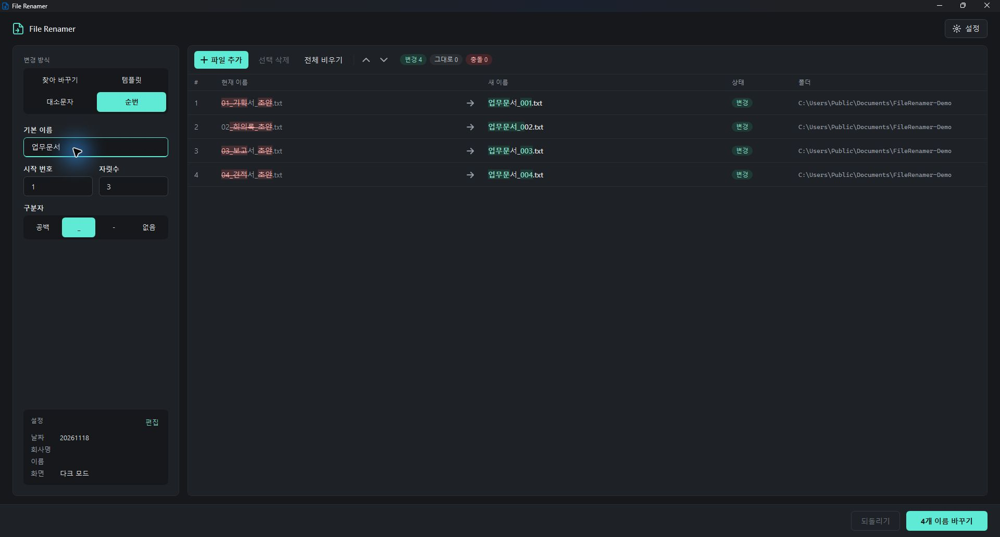
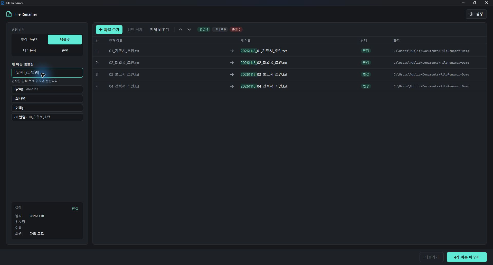

내 앱을 Store에 올리는
처음부터 끝까지 가이드.
이번에는 준비된 File Renamer로 직접 등록해 보고, 다음 앱에서는 같은 순서로 준비할 수 있도록 만들었습니다.
현재 상태부터 정확하게
| 준비된 것 | 1.0.2.0 제출용 MSIX, 아이콘, 소개문, 심사 메모, PNG 스크린샷 4장, 개인정보·지원 안내 |
|---|---|
| 이번에 확인 | 설치된 앱의 실제 미리보기·충돌 차단, 예시 파일 4개의 이름 변경·되돌리기 및 내용 보존, 제출 파일 SHA256 일치 |
| 아직 남음 | 가격·국가·공개 시점 결정, 전체 배율·드래그 사용 점검, Partner Center 입력 및 최종 심사 제출 |
| 검사 경고 | WACK 전체 WARNING. 24개 중 22 PASS, 선택 1 FAIL, 필수 DPI 1 WARNING. ‘완전 통과’로 적지 않습니다. |
공개 페이지의 실제 배포 결과는 같은 폴더의 링크 및 상태를 확인하세요. 앱의 Store 업로드·제출·출시는 아직 진행하지 않았습니다.
이 가이드의 지도
1앱의 목적과 범위 정하기
메모장에 아래 네 줄을 적습니다. 이번 앱은 이미 구현되어 있으므로 참고하며 읽으면 됩니다.
누가: 여러 파일 이름을 정리하는 Windows 사용자 문제: 하나씩 이름을 바꾸기 번거롭다 해결: 미리보기를 보고 규칙으로 일괄 변경한다 범위: Windows 데스크톱 · x64 패키지 · 한국어
다른 앱에서는: 로그인·결제·외부 서버·개인정보·복구 기능이 있는지 덧붙이세요. 앱마다 점검 내용이 달라집니다.
완료 확인
2개발자 계정과 제품 연결하기
- Partner Center에 앱 이름을 예약했던 계정으로 로그인합니다.
- 앱 및 게임 목록에서 File Renamer_Dohi를 찾습니다. 이미 있으므로 같은 앱을 새로 만들 필요는 없습니다.
- 제품 ID 또는 제품 식별 정보 화면에서 아래 값을 대조합니다. 메뉴 위치는 계정에 따라 다를 수 있습니다.
제품과 설치 파일의 신분증 맞추기
비밀번호와 인증 코드는 본인이 입력하세요. 다른 앱을 새로 만들 때는 새 제품의 식별자를 사용해야 합니다. File Renamer의 값을 복사하면 다른 제품으로 연결됩니다.
완료 확인
3개발 도구와 설치 파일 이해하기
| 이름 | 쉽게 말하면 | 이번 상태 |
|---|---|---|
| .NET SDK | C# 코드를 실행 파일로 만드는 도구 | 기존 빌드 환경 사용 |
| Windows SDK / MakeAppx | Windows 설치 상자를 만드는 도구 | 패키지 생성 기록 있음 |
| WACK | 제출 전 자동 점검 도구 | 설치 및 검사 완료 기록 있음 |
| MSIX | 앱과 아이콘·제품 정보를 담은 설치 상자 | 제출용 1.0.2.0 준비됨 |
| 서명 인증서 | 설치 파일의 게시자·변조 여부를 확인하는 수단 | 로컬 테스트에 임시 인증서 사용 |
이번에 업로드할 파일:
artifacts/msix/Release/Dohi.FileRenamerDohi_1.0.2.0_x64.msix
제출용 MSIX 파일 · 업로드할 파일입니다. 테스트 설치용 사본과 구분하세요.
나중에 직접 다시 만들려면
프로젝트 폴더에서 개발 환경을 확인한 뒤 저장소의 패키징 README에 있는 Build-Msix.ps1 명령과 매개변수를 그대로 사용하세요. 버전을 올리면 새 파일로 설치·기능·검사를 다시 확인해야 합니다. 초보 단계에서는 준비된 파일로 등록을 먼저 연습하세요.
완료 확인
4설치된 앱으로 실제 테스트하기
먼저 시험용 폴더를 엽니다. 탐색기의 주소 표시줄에 아래 경로를 붙여 넣으세요. 예시 텍스트 파일 6개가 준비되어 있습니다.
C:\Users\Public\Documents\FileRenamer-Demo
- File Renamer를 열고 파일 추가로 예시 파일을 선택합니다.
- 찾아 바꾸기에서
초안을완료로 바꿔 봅니다. 정규식은 처음에는 끕니다. - 미리보기에서 새 이름을 읽은 뒤 오른쪽 아래 버튼을 누릅니다.
- 탐색기에서도 바뀌었는지 확인합니다. 앱의 되돌리기를 누르고 원래 이름으로 돌아왔는지 확인합니다.
- 템플릿을
동일한이름으로 설정해 중복 경고가 나오고 적용이 막히는지 확인합니다. - 템플릿을
{날짜}_{파일명}으로 고쳐 날짜가 붙고 충돌이 사라지는지 봅니다.


남은 화면·입력 점검
2026-11-18 자동 조작으로 예시 4개의 템플릿 이름 변경·되돌리기와 내용 보존을 확인했습니다. 위의 배율·끌어 놓기 전체 점검까지 완료했다는 의미는 아닙니다.
완료 확인
5인증 검사 결과 읽기
자동 검사: WACK
앱 설치·실행·구조 등을 검사합니다. 원본 보고서를 보관하고 어느 버전으로 실행했는지 적습니다.
사람의 실제 사용 확인
이름이 의도대로 바뀌는지, 화면이 읽히는지, 오류를 이해할 수 있는지 확인합니다. 두 검사는 서로 보완합니다.
| 결과 | 할 일 |
|---|---|
| PASS | 이 검사 통과. 버전과 기록 보관. |
| WARNING | 원인과 실제 동작을 확인. 근거와 함께 설명. |
| FAIL | 필수/선택 구분 후 원인 확인. 필수 실패는 해결해야 함. |
| 미실행 / 부분 실행 | 검사를 완료한 것으로 쓰지 말고 실행 환경을 점검. |
영어 심사 메모에 실제 검사 상황을 적었습니다. 원본은 검사 요약과 같은 폴더의 report.xml에 있습니다.
검사를 직접 다시 실행하려면 기술 README의 Test-Wack.ps1 절차를 따르세요. 앱이 닫히거나 실행될 수 있으므로 작업을 저장한 뒤 합니다. 기존 결과를 이해하려는 목적이라면 재실행할 필요는 없습니다.
완료 확인
6소개문·스크린샷·개인정보 안내 준비하기
준비된 Store 입력문구에서 설명과 캡션을 복사하세요. 스크린샷은 아래 4개 PNG를 순서대로 사용합니다.


| 파일 | 보여 주는 기능 |
|---|---|
| 01-replace.png | 찾아 바꾸기 |
| 02-sequence.png | 순번 매기기 |
| 03-template.png | 날짜 템플릿 |
| 04-conflict.png | 이름 충돌 방지 |


모두 실제 앱 캡처이며 1920×1032입니다. Store 데스크톱 스크린샷은 PNG, 최소 1366×768, 파일당 50MB 이하이며 4장 이상이 권장됩니다. 공식 이미지 규격
왜 ‘개인정보를 저장하지 않음’이라고 쓰면 안 되나요?
이 앱은 회사명·이름·최근 입력값을 PC에 저장합니다. 서버로 보내지 않는 것과 아무것도 저장하지 않는 것은 다릅니다. 작성된 안내에서 실제 저장·삭제·문의 방식을 읽으세요.
문의 이메일은 kmam147@gmail.com입니다. 이메일로 받은 정보도 개인정보가 될 수 있으므로 문의가 끝난 불필요한 정보는 정리하고 삭제 요청을 처리하세요. 앱·사이트의 동작이 바뀌면 정책도 함께 바꿉니다.
완료 확인
7Partner Center에서 제출 초안 열기
- Partner Center 열기 → 로그인합니다.
- 앱 및 게임에서 File Renamer_Dohi를 선택합니다.
- 개요의 제품 릴리스 영역에서 Start submission / 제출 시작을 누릅니다. 이미 초안이 있으면 그 초안을 엽니다.
- 가격·속성·연령 등급·패키지·Store 등록 정보 항목을 찾습니다. 화면 이름과 배치는 계정에 따라 달라질 수 있습니다.
제출 초안의 작업 목록
이 그림은 위치를 이해하기 위한 개념도입니다. 실제 계정의 화면과 메뉴 위치까지 동일하다는 뜻은 아닙니다. 공식 제출 체크리스트
완료 확인
8가격·국가·속성·등급 결정하기
① 가격 및 공급
무료/유료, 배포할 국가, 고객에게 보이는 범위를 정하고 저장하세요. 처음 연습할 때는 무료·대한민국·심사 후 수동 공개를 검토할 수 있습니다. 제안일 뿐 실제 설정은 아직 하지 않았습니다. 유료를 고르면 화면에서 요구하는 정산·세금 정보도 확인합니다.
② 속성
카테고리는 실제 선택지에서 유틸리티 및 도구(Utilities & tools)를 검토하세요. 개인정보 정보 접근 여부를 묻는 항목은 파일명·경로·설정에 접근하는 실제 동작을 기준으로 답하고 안내 URL을 넣습니다.
지원 정보에 입력할 값
링크 점검: 새 시크릿/비공개 브라우저 창에서 각 링크를 열어 로그인 없이 내용이 보이는지 확인합니다. 로컬 파일 경로 C:\...는 Store용 공개 URL이 아닙니다.
③ 연령 등급
질문을 하나씩 읽고 앱의 실제 콘텐츠와 기능에 맞게 답하세요. 정해진 등급을 얻으려고 임의로 답하지 마세요. 결과 등급을 확인한 뒤 저장합니다.
완료 확인
9패키지와 Store 소개 입력하기
- Packages / 패키지에서 업로드 영역을 눌러 Release 폴더의
Dohi.FileRenamerDohi_1.0.2.0_x64.msix를 선택합니다. - 업로드와 검증이 끝날 때까지 기다립니다. 오류가 있으면 정확한 문구를 복사해 확인합니다. .msix 확장자를 임의로 바꾸지 마세요.
- 표시된 버전 1.0.2.0과 대상 x64를 확인합니다. 패키지에 Validated가 떠도 섹션의 필수 설정이 남으면 Incomplete일 수 있습니다.
- Store listings / Store 등록 정보에서 한국어 항목을 열고 입력문구의 설명을 붙여 넣습니다.
- 스크린샷 4개를 올리고 01→02→03→04 순서로 배치합니다. 캡션도 같은 파일에서 복사합니다.
- 각 항목을 저장하고 제출 개요로 돌아와 미완료 표시를 확인합니다.
패키지 선택 직전 확인
완료 확인
10심사 제출, 그리고 실제 출시 확인하기
- 제출 옵션 / Submission options에서 게시 시점 설정을 확인합니다. 수동 공개를 원하면 Microsoft가 표시하는 수동 게시 옵션을 선택합니다.
- Notes for certification / 심사 메모에 준비된 영어 메모를 넣습니다. 로그인 정보는 필요 없는 앱입니다.
- 제품·가격·국가·공개 시점·링크·버전·사진·검사 경고를 마지막으로 읽습니다.
- 이제 Submit to the Store / Store에 제출을 직접 누릅니다.
- 상태가 초안에서 심사 진행으로 바뀌었는지 확인하고 제출일을 기록합니다.
- 반려되면 보고서의 정확한 항목을 확인해 수정합니다. 코드를 바꾸면 버전도 올려 새 패키지로 점검합니다.
- 심사 통과 후 수동 게시를 선택했다면 게시 작업을 수행합니다. 공개된 Store 페이지에서 일반 사용자처럼 설치·실행을 확인합니다.
심사에 걸리는 시간과 통과 여부는 확정해서 약속할 수 없습니다. 제출 상태와 보고서가 기준입니다. 제출·게시 옵션
완료 확인
11다음 앱에도 같은 순서 쓰기
아래 양식을 복사해 새 프로젝트에서 채우세요. File Renamer의 제품 ID·정책 문구·테스트 결과를 다른 앱에 그대로 붙이지 마세요.
앱 이름 / 대상 사용자 / 해결할 문제: 플랫폼 / 최소 OS / CPU / 언어: 배포 방식: Store MSIX / 직접 배포 / 웹 / 모바일 제품 ID / 게시자 / 계정: 버전 / 빌드 명령 / 배포 파일 / SHA256: 수집·접근하는 데이터 / 목적 / 저장 위치 / 삭제 방법: 외부 서비스·로그인·결제·광고·분석 SDK: 기능·오류·설치·업데이트·권한·화면·복구 테스트: 자동 검사 결과 / 미해결 경고 / 근거 위치: 아이콘 / 스크린샷 / 설명 / 개인정보 URL / 지원 URL: 가격 / 국가 / 공개 시점 / 심사 제출일: 심사 결과 / 공개 URL / Store 설치 확인일: 문의 대응 / 업데이트·정책 변경 담당:
무언가 막힐 때 보내면 좋은 요청:
지금 단계: 9단계 패키지 업로드 하려던 일: 1.0.2.0 MSIX 올리기 실제로 누른 것: ... 화면의 정확한 오류: ... 내가 기대한 결과: ... 이미 해 본 것: ...
화면에 개인정보가 있으면 가리고 보내세요. 오류 문구와 재현 순서가 있으면 원인을 더 정확히 좁힐 수 있습니다.
완료 확인
용어를 쉽게 풀면
| 용어 | 뜻 |
|---|---|
| 패키지 | 앱을 설치할 수 있게 묶은 파일 |
| 게시자 / Publisher | 누가 만든 앱인지 식별하는 정보 |
| SHA256 | 두 파일이 같은지 비교하는 지문. 안전성 인증이 아님 |
| DPI / 배율 | 화면에서 글자와 버튼을 얼마나 크게 보여 줄지 정하는 기준 |
| runFullTrust | 일반 데스크톱 프로세스로 실행하는 패키지 권한. 관리자 권한과 다름 |
| 심사 | Store 배포 기준을 Microsoft가 확인하는 절차 |
공식 문서 확인일: 2026-11-18. Partner Center 도식은 설명용 그림이며 실제 계정 화면을 캡처한 것은 아닙니다. 모든 앱·기기·법적 상황에 대한 검증을 대신하지 않습니다.